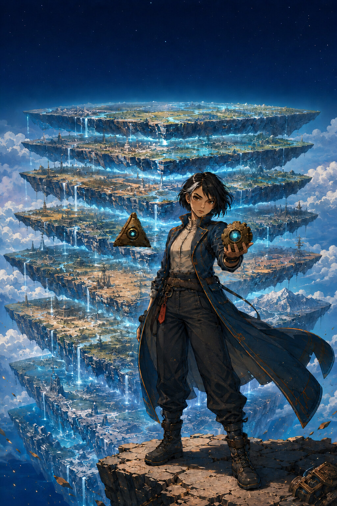
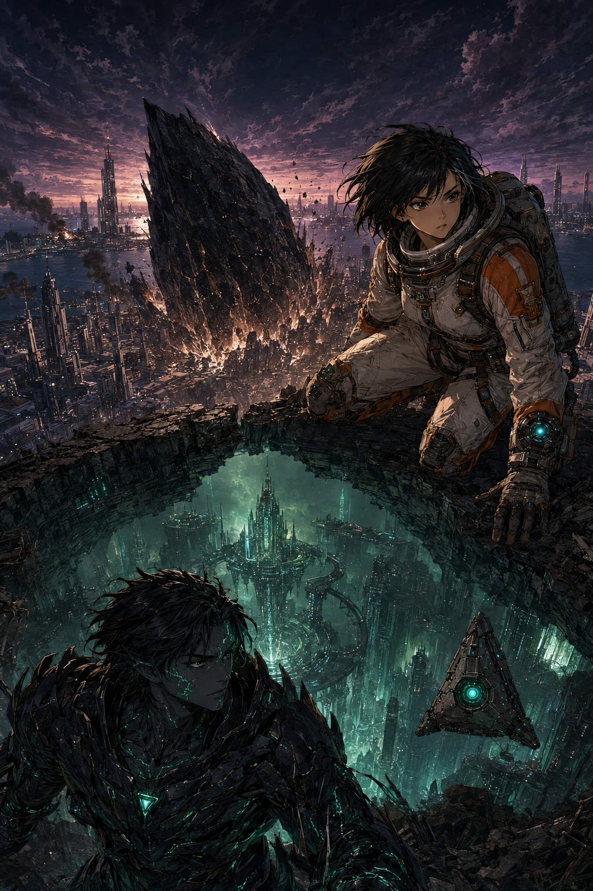

TẬP 1SCI-FI · BÍ ẨN · PHIÊU LƯU
Cửu Tầng Phẳng
Mép trời không cong.
Chiếc la bàn lại chỉ xuống.
Linh An sống trong một thế giới được dạy là vô tận. Khi chiếc la bàn của người mẹ mất tích thức tỉnh, cô phát hiện dưới chân mình còn tám bầu trời khác — và cỗ máy giữ chúng cách xa nhau đang sụp đổ.

TRUYỆN MỚISCI-FI · SINH TỒN · ĐỊA TÂM
Vết Thủng 2237
Thiên thạch không nổ.
Nó gõ cửa từ phía bên kia.
Năm 2237, một thiên thể đen xuyên qua thành phố và tiếp tục khoan sâu vào Trái Đất. Nữ phi công cứu hộ An Vy lần theo tín hiệu sống dưới hố va chạm — rồi chạm mặt Kha-Ruun, chiến binh của tộc Nham đã sống quanh địa tâm từ trước lịch sử loài người.
Đọc Vết Thủng 2237 →TẬP 1 · NGƯỜI GIỮ KHÓA
Danh sách chương
Đang phát hành